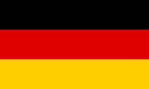
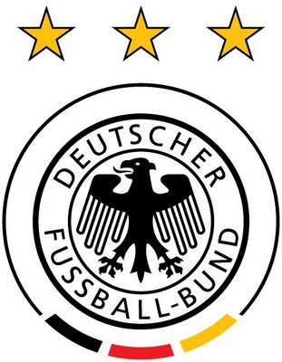

독일
Germany


FIFA Ranking: 1위
독일의 특징
- 우승 4회, 준우승 4회
- 한 두명의 스타플레이어에 의존하지 않는 조직력
- 별명은 전차군단
- 세계에서 가장 뛰어난 유소년 축구 시스템으로 신예 등장
감독
요하임 뢰프
- 2006년 7월 감독 부임
- 다양한 포메이션을 실험하며 많은 선수 교체를 통해 2, 3군까지 테스트
- 예비전력을 두텁게 만들려는 경향이 강한 편
2018 독일 대표팀 주요 선수
- (GK) 테허 슈테겐 - 바르셀로나
- (GK) 노이어 - 바이에른 뮌헨
- (DF) 훔멜스 - 바이에른 뮌헨
- (DF) 키미히 - 바이에른 뮌헨
- (MF) 케디라 - 유벤투스
- (MF) 드락슬러 - 파리 생제르망
- (MF) 토니 크로스 - 레알 마드리드
- (MF) 메수트 외질 - 아스날
- (MF) 마리오 괴체 - 도르트문트
- (MF) 르로이 사네 - 맨체스터 시티
- (FW) 토마스 뮐러 - 바이에른 뮌헨
- (FW) 안드레 쉬를레 - 도르트문트
하이라이트 영상